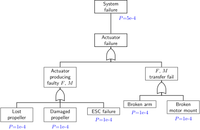
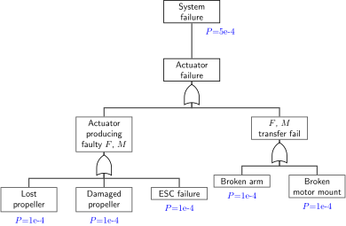

Actuator fault detection
Bram Strack van Schijndel
Why fault tolerant control?
Fault tree analysis
 

Adds up
$P(A \cup B)=P(A)+P(B)$
Fault tree analysis
Graceful degradation
Give up control functions like:
- Yaw
- Altitude
- Pitch and/or roll (thrust vector)
- Position
Example
One actuator shuts down so:
- Yaw control is given up
- Flight envelope shrinks
But still limited control over thrust vector
Graceful degradation
Give up control functions like:
- Yaw
- Altitude
- Pitch and/or roll (thrust vector)
- Position
While saving what we can
Challenging
Because failures:
- Come in many different modes
- Happen in real-time
This leads complex control system designs:
- Unintended consequences
- Are difficult to test
Why actuator fault detection?
Helps picking a control strategy
Previous work
Two videos, three papersMark W. Mueller and Raffaello D'Andrea
## Key points
- Pseudoinverse
- 4 actuators,
- controlling 4 degrees of freedom
- Not handling noise
- Simulation study
$\left[ \begin{array}{c}{T} \\ {\tau_{x}} \\ {\tau_{y}} \\ {\tau_{z}}\end{array}\right]=\left[ \begin{array}{cccc}{b} & {b} & {b} & {b} \\ {0} & {-L b} & {0} & {L b} \\ {L b} & {0} & {-L b} & {0} \\ {-d} & {d} & {-d} & {d}\end{array}\right] \left[ \begin{array}{c}{\omega_{1}^{2}} \\ {\omega_{2}^{2}} \\ {\omega_{3}^{2}} \\ {\omega_{4}^{2}}\end{array}\right]$
with:
- thrust $T$, torques $\tau$
- thrust constant $b$, torque constant $d$, arm length $L$
- rotor speeds $\omega$
$\hat{T}=m(g-\hat{w}) /(\mathbf{C} \hat{\phi} \mathbf{C} \hat{\theta})$
Torques:$\begin{aligned} \hat{\tau}_{x} &=I_{x} \hat{p}-\left[\left(I_{y}-I_{z}\right) \hat{q} \hat{r}+I_{r} \hat{q} \hat{\omega}_{r}\right] \\ \hat{\tau}_{y} &=I_{y} \hat{\dot{q}}-\left[\left(I_{z}-I_{x}\right) \hat{r} \hat{p}-I_{r} \hat{p} \hat{\omega}_{r}\right] \\ \hat{\tau}_{z} &=I_{z} \hat{r}-\left[\left(I_{x}-I_{y}\right) \hat{p} \hat{q}+I_{r} \hat{\omega}_{r}-k_{r} \hat{r}\right] \end{aligned}$
## Next paper
## Key points
- INDI, so:
- Takes derivative of rotational rates
- Makes use of rotor speed measurements
- Runs both measurements through same LP filter
- Adaptive:
- Estimating 16 + 4 control effectiveness parameters
- Using LMS
- Takes seconds to converge
- Works in real world
## Last paper
## Key points
- Handles actuator failures *and* disturbances
- Very recent, state of art
- Linearized around hover
- Very complex..
Research gap
- Often complex solutions
- Often questionable assumptions
- Little real world validation
Research goal
Find an efficient and reliable fault detection and isolation method that detects actuator faults.
Efficient
Little waste of resources like:
- Developer time
- Computational time
- MAV operator time
Reliable
- Highly sensitive to actuator failures
- Low probability of false alarm
- Low complexity
Solution space
- Input signals?
- Direct, filtered and/or debiased IMU measurements
- Rotor speed measurements or setpoints
- Fused estimator outputs
- Observers?
- Thau, Kalman, Luenberger
- Direct pseudoinverse
- Estimators?
- LMS, RLS, Kalman, ML, moving window, forgetting factor
- Detection & isolation logic?
- Thresholds on residuals or estimated parameters
- Fuzzy
## So,
- No analytical solution
- Lots off tradeoffs
## Problem
Iterations are slow
Research strategy
Two main steps:
- Dramatically speed up iterative design process
- Iterate on problem
Iteration
- Design, simulate system in Simulink
- Implement solution in quadrotor/MAV
- Run some flight test sequence
- Retrieve, visualize log data
- Check assumptions, performance and adjust
Automation example
Goal is to automate step 2 (implementation),
by going from a Simulink model to C++ library to be used in PX4


% codegen.m
%% Script meant to:
% - generate C++ code from Simulink model
% - move code to 'simulink_wrapper', px4-module
% - also copy needed CMakeLists.txt
%%
%% Build Simulink subsystem
model = 'quadrotor/Controller/Primary_axis_INDI_controller/attitude_controller/INDI_allocator'
rtwbuild(model)
% rtwbuild clears all variables!
verbose = true;
%% Unzip "packNGo"-package to temp folder
modelName = 'INDI_allocator';
tempUnzipDir = './temp/';
unzip(strcat(modelName, '.zip'), strcat(tempUnzipDir, modelName));
%% Move generated files to codegen folder in px4
px4CodegenParentDir = '~/src/Firmware/src/modules/simulink_wrapper/';
px4CodegenDirName = 'codegen';
px4CodegenDir = strcat(px4CodegenParentDir, px4CodegenDirName);
rmdir(px4CodegenDir, 's');
mkdir(px4CodegenParentDir, px4CodegenDirName);
tempFilesAndFolders = dir(strcat(tempUnzipDir, '**'));
successCount = 0;
for i = 1:numel(tempFilesAndFolders)
fileOrFolder = tempFilesAndFolders(i);
if fileOrFolder.isdir == false
file = strcat(fileOrFolder.folder, '/', fileOrFolder.name);
successCount = successCount + copyToPx4Codegen(file, px4CodegenDir, verbose);
end
end
% Move CMakeLists.txt..
currentPath = fileparts(mfilename('fullpath'));
cmakePath = strcat(currentPath, '/CMakeLists.txt');
successCount = successCount + copyToPx4Codegen(cmakePath, px4CodegenDir, verbose);
fprintf('Files moved: %i\n', successCount)
function [success] = copyToPx4Codegen(file, px4CodegenDir, verbose)
[success, message] = copyfile(file, px4CodegenDir);
if verbose, disp(message), end
end
Python
# test_matlablib.py
from matlablib import Matlab, Model, codegen
PROJECT_ROOT = "./simulink_model"
SYSTEM_FILE = "./Control/RateControl/RateControl.slx"
MODEL = "RateControl"
def test_codegen(project):
model = Model(project, SYSTEM_FILE, MODEL)
codegen(model)
model.engine.quit()
# 'simulink_model/config.py'
MODEL_CONFIGS: Dict[str, ModelConfig] = {
"RateControl": ModelConfig(
system_file="./Control/RateControl/RateControl.slx",
model="RateControl",
parameters=SimulinkCoderParameters(),
target_directory=str(
Path(
"~/src/Firmware/src/modules/sl_control/RateControl" # is PX4 library
).expanduser()
),
px4_input_log_topic="rate_control_input",
example_input_data="./Control/RateControl/example_rate_control_input_0.csv",
example_logsout_data="./Control/RateControl/example_rate_control_input_0_logsout.mat",
),
"AttitudeControl": ModelConfig(
system_file="./Control/AttitudeControl/AttitudeControl.slx",
model="AttitudeControl",
parameters=SimulinkCoderParameters(),
target_directory=str(
Path(
"~/src/Firmware/src/modules/sl_control/AttitudeControl"
# is PX4 library
).expanduser()
),
px4_input_log_topic="attitude_control_input",
example_input_data="",
),
"PosDirectControl": ModelConfig(
system_file="./Control/PosDirectControl/PosDirectControl.slx",
model="PosDirectControl",
parameters=SimulinkCoderParameters(),
target_directory=str(
Path(
"~/src/Firmware/src/modules/sl_pos_direct_control/PosDirectControl"
# is PX4 library
).expanduser()
),
px4_input_log_topic="pos_direct_control_input",
example_input_data="",
),
"URControl": ModelConfig(
system_file="./Control/URControl/URControl.slx",
model="URControl",
parameters=SimulinkCoderParameters(),
target_directory=str(
Path(
"~/src/Firmware/src/modules/sl_urcontrol/URControl"
# is PX4 library
).expanduser()
),
px4_input_log_topic="urcontrol_input",
example_input_data="",
),
}
Command line interface (CLI)
$ dc
Usage: dc [OPTIONS] COMMAND [ARGS]...
Options:
--version Show the version and exit.
--help Show this message and exit.
Commands:
codegen Run MATLAB code generation.
print-path Print Python path.
qgc Start QGroundControl.
replay Run ulog file replay.
toptest
$ █
$ dc codegen --help
Usage: dc codegen [OPTIONS]
Run MATLAB code generation.
Options:
-m, --model [RateControl|AttitudeControl|PosDirectControl|URControl]
Model options are defined in
`simulink_model/config.py` [required]
--help Show this message and exit.
$ █
## Recap
Went from:
- Clicking buttons
- To a script
- To functions/classes
- To adding configuration file
- To building command line interace
## Some benefits
- Faster progress in advancing flight control
- More repeatable experiments and results
- Much faster onboarding of new people
## Lessons learned
Must consume and build scriptable interfaces:
- Consume Matlab Python API
- Build CLI with Python Click package
## More lessons learned
Only worth the effort if more people benefit and contribute back.
Need support structure to facilitate this sharing and creation:
- Source control
- Automated testing
- Readme, documentation
- Good IDE support
## Next steps
- Build interface in PX4 with codegenned library
- Fly, log data
- Replay flight data in Simulink (big shortcut)
## Failure case
Propeller ejection
* Easier to replicate than broken arm

0 ms
0 samples
Current state of solution
Remember solution space?
Regression model
$$ \begin{bmatrix} \dot{p} \\ \dot{q} \\ \hdashline a_z \\ \end{bmatrix} = \begin{bmatrix} G_p \omega_1^2 & -G_p \omega_2^2 & -G_p \omega_3^2 & G_p \omega_4^2 \\ G_q \omega_1^2 & G_q \omega_2^2 & -G_q \omega_3^2 & -G_q \omega_4^2 \\ \hdashline -G_{a_z} \omega_1^2 & -G_{a_z} \omega_2^2 & -G_{a_z} \omega_3^2 & -G_{a_z} \omega_4^2 \\ \end{bmatrix} \begin{bmatrix} k_1 \\ k_2 \\ k_3 \\ k_4 \\ \end{bmatrix} $$
Estimating scaling factor $k$, 0 means total failure, 1 nominal effect
Binary classification problem
Given variance $ \sigma^2_k $, we can compute the probability
$$P_\text{fail} = P(k < k_\text{thres})$$
with $k_\text{thres} = 0.25$
Then
$$
\text{act}_{i_\text{failed}} =
\begin{cases}
1 & \text{if}\ P_\text{fail} > P_\text{thres}\\
0 & \text{if}\ P_\text{fail} < P_\text{thres}\\
\end{cases}
$$
with $P_\text{thres} = 0.9$
Questions? Comments?
Extras
How this presentation?
https://github.com/hakimel/reveal.js/#full-setup
Codegen: limitations
- Only signals, parameters as input, no events
- Fixed timestep
Codegen: related work
Memory requirements
| Flash | RAM | |
| PX4 | 2 MB | 256[1]-512[2] kB |
| PPZ | 256[3]-1024[4] kB | 16[3]-192[4] kB |
Reference frames
- Body
- Inertial
INDI
$ echo "Hello, world!"
$ if [ -e README ]; then
> echo 'README exists.'
> else
> echo "README doesn't exist."
> fi
`$$\boldsymbol{\omega}=\boldsymbol{\omega}_{f}+\left(\boldsymbol{G}_{1} \operatorname{diag}\left(\boldsymbol{\omega}_{f}\right)+\boldsymbol{G}_{2}-\boldsymbol{C}\left(\boldsymbol{\Omega}_{f}\right) \boldsymbol{G}_{3}\right)^{+}\left(\boldsymbol{\nu}-\dot{\boldsymbol{\Omega}}_{f}+\boldsymbol{G}_{2} z^{-1}\left(\boldsymbol{\omega}-\boldsymbol{\omega}_{f}\right)\right)$$`
import click
from simulink_model import Api, MODEL_CONFIGS
MODELS = MODEL_CONFIGS.keys()
@cli.command(help="Run MATLAB code generation.")
@click.option(
"--model",
"-m",
"models",
type=click.Choice(MODELS),
required=True,
multiple=True,
help="Model options are defined in `simulink_model/config.py`",
)
def codegen(models: Tuple[str]):
api = Api()
for model in models:
api.codegen(MODEL_CONFIGS[model])
# matlablib.py
class Model:
"""
Simulink model class.
"""
def rtwbuild(self) -> RtwBuildDir:
"""
Build the model and return the `BuildDirectory`,
among other info in the dict. The `model` must exist in the already loaded system.
Reference:
https://mathworks.com/help/rtw/ref/rtwbuild.html
"""
LOGGER.debug(f"Building model: '{self.model}'")
self.engine.rtwbuild(self.model)
rtw_build_dir: RtwBuildDir = self.engine.eval(
f"RTW.getBuildDir('{self.model}')"
)
build_directory = rtw_build_dir["BuildDirectory"]
LOGGER.debug(f"Build directory: '{build_directory}'")
codegen_folder = rtw_build_dir["CodeGenFolder"]
rtw_build_dir["PackNGoZipFile"] = self.get_packngo_zip(
codegen_folder
) # pylint: disable=C0103
return rtw_build_dir
Tikz
PX4
- Organized around uORB, modules